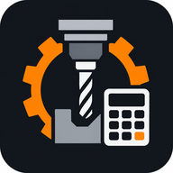
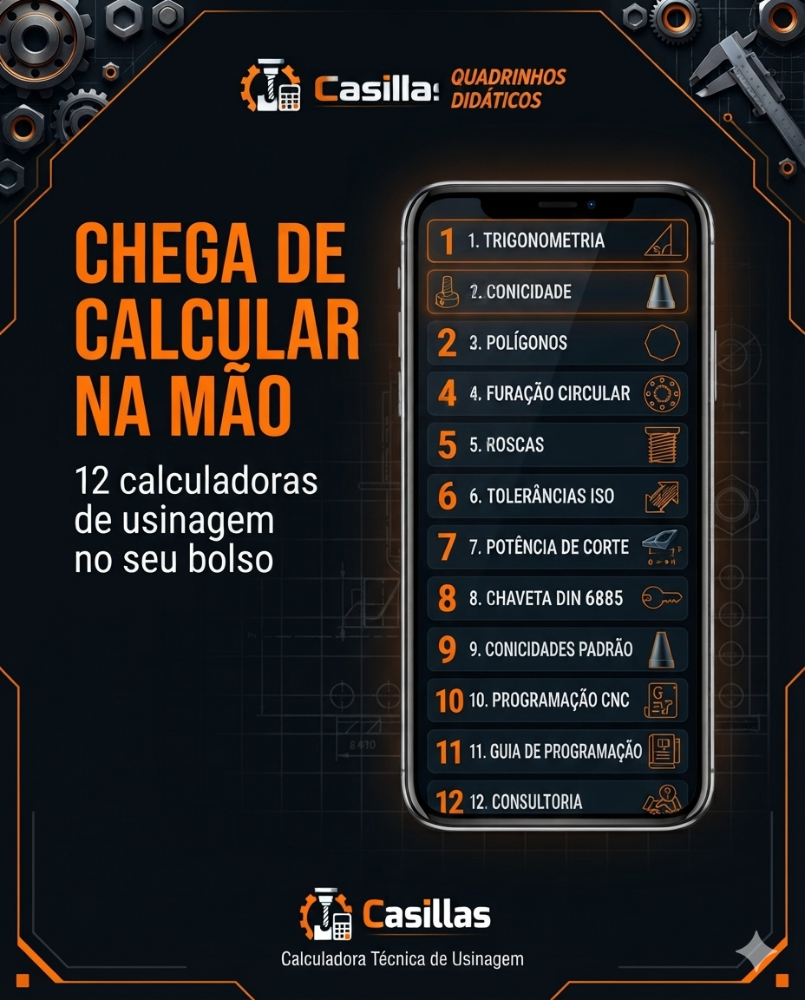
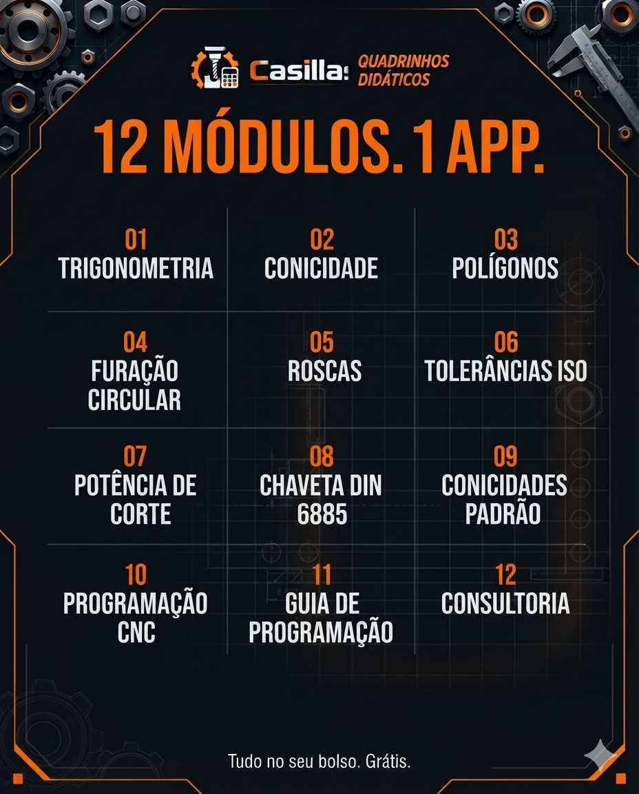
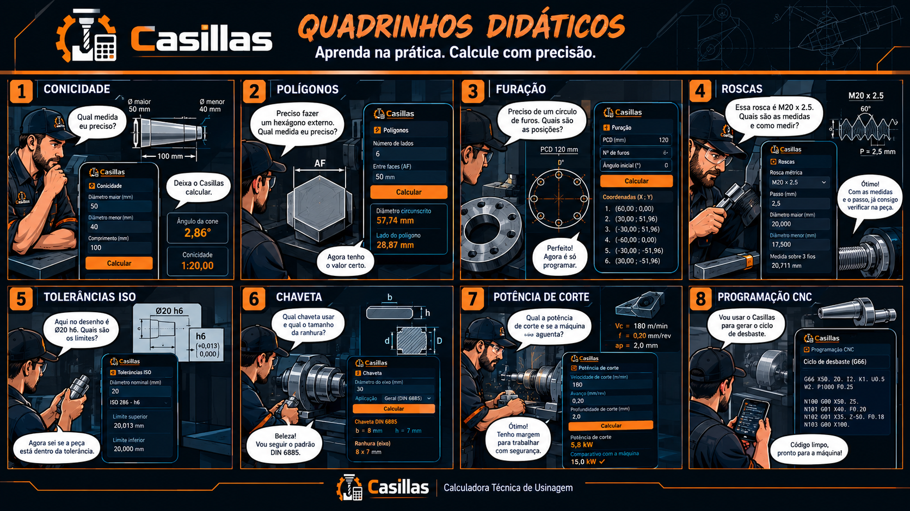

Casillas12 calculadoras de usinagem no seu bolso. Precisão, agilidade e resultado na palma da sua mão. Funciona 100% offline.
30 dias grátis. Sem cartão de crédito.

Tem jeito melhor →
Tudo no seu bolso. Grátis para testar.

Ângulos, catetos e hipotenusa
Ângulo do cone e conicidade
Hexágonos, quadrados e mais
Coordenadas X/Y e PCD
Métrica, Whitworth e NPT
h6, H7, limites e ajustes
Verificação em kW
Eixos e ranhuras
Morse CM1 a CM6
RPM, avanço e Macro B
Códigos G prontos
Suporte via WhatsApp
Não entregamos apenas o resultado. Mostramos o caminho.

Oferta de lançamento
Use o Casillas na sua conta, sem mensalidade e sem limite de aparelhos.
Valor promocional de lançamento
Pagamento via PIX. A licença é liberada após a confirmação do pagamento.
30 dias de acesso completo. Sem cartão de crédito. Funciona offline.
Dicas, cálculos e casos práticos de usinagem todos os dias.
Seguir @casillas_usinagem.brOferecemos consultoria técnica, cursos e suporte especializado para torneiros, fresadores e programadores CNC.